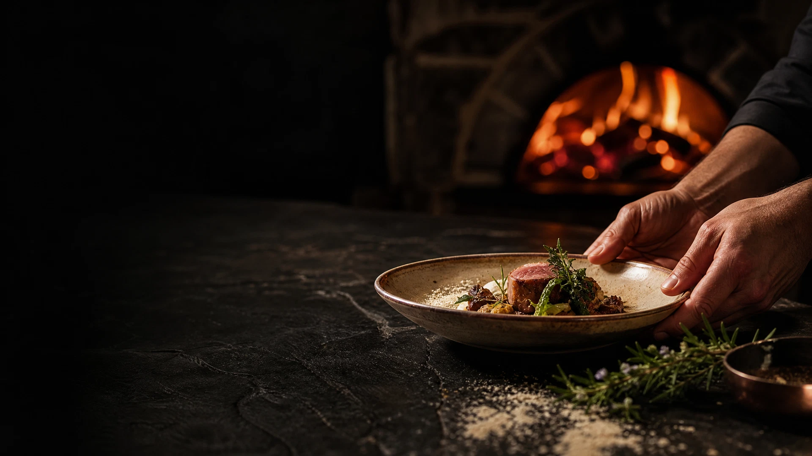
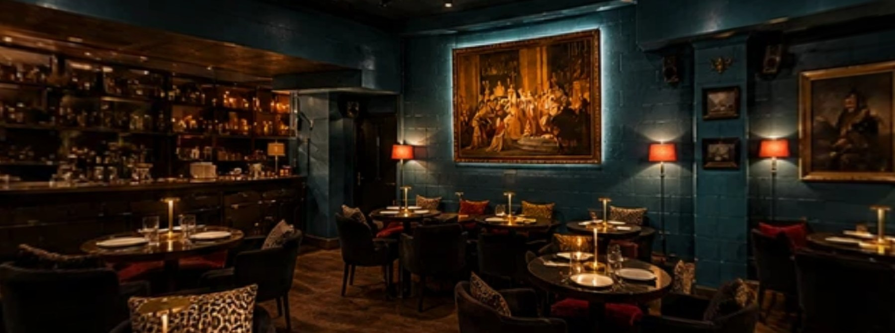
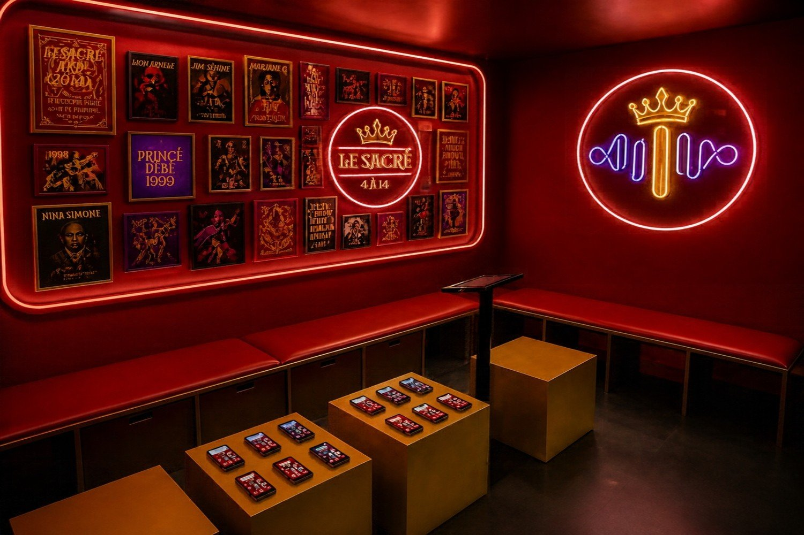
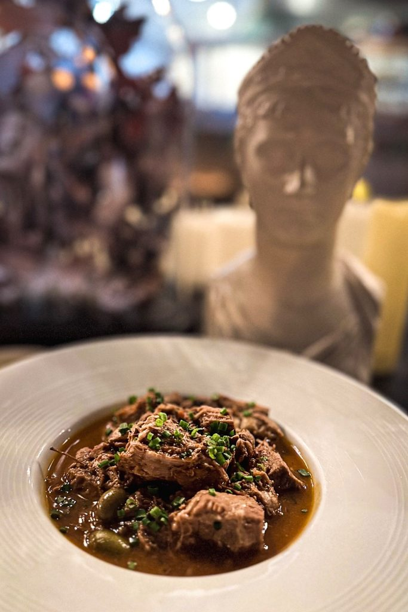
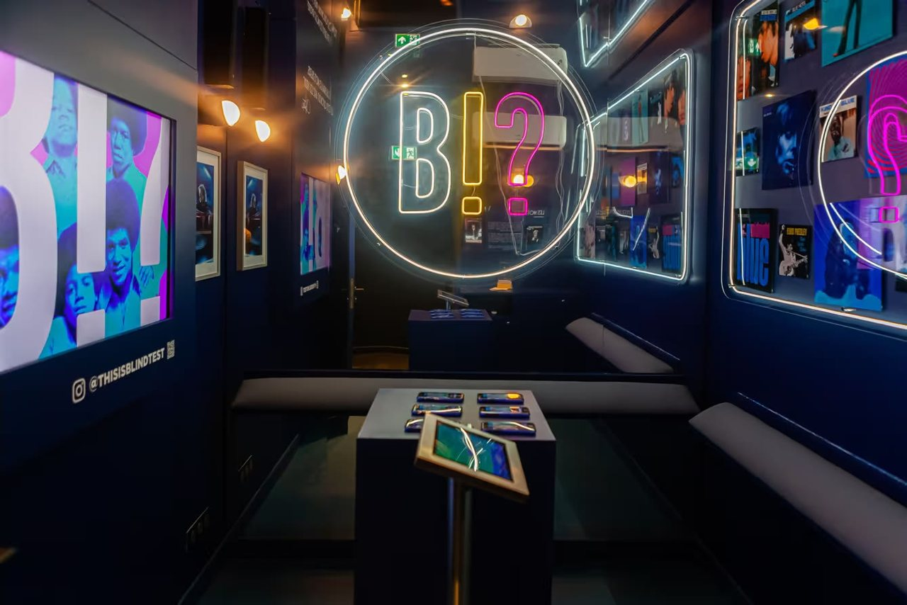
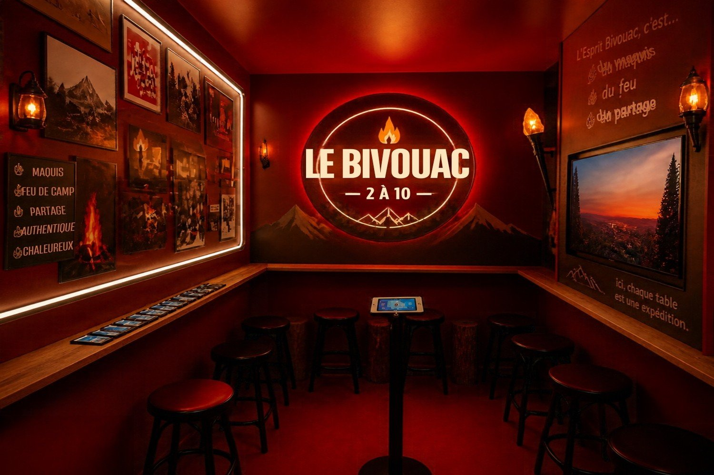

I.
Prisuttu, lonzu, coppa
Les grandes charcuteries de l’île, salées puis séchées lentement à l’air de la montagne. Le jambon prend son temps : il se tranche fin, à la main, et se goûte d’abord sans pain.

Restaurant corse · Paris 17 · Entre mer et maquis
Le prisuttu tranché à la main, le brocciu qui gratine, l’odeur du maquis après la pluie. À deux pas des Ternes, une table corse qui ne chuchote pas.

Plat signature

Fait maison

L’ambiance
Vos avis
Ce sont nos convives qui en parlent le mieux.
Lire les avis Google →
Après le dîner
« Per l’onore è per a Corsica »
La devise de la maison
La Carte
À partager au milieu de la table, à la carte ou en menu dégustation, avec les vins corses de la maison.
Fait maison Plat élaboré sur place à partir de produits bruts.
Prix en euros, taxes et service compris · Liste des allergènes disponible sur demande auprès de notre équipe.
L’histoire de NAPO
NAPO est né d’un goût pour les grands contrastes : l’héritage corse et l’énergie de Paris, les cadres dorés et les couleurs qui refusent de chuchoter, le rituel de la table et l’envie de bousculer les codes.
À deux pas des Ternes, au 4-6 rue Pierre Demours, ce restaurant corse à Paris 17 imagine une salle où l’on vient autant pour s’attabler que pour entrer dans un décor. Une cuisine corse authentique, revisitée avec modernité : prisuttu, lonzu et coppa, brocciu, châtaigne et herbes du maquis.

Haute-Corse · Paris 17
Le chef
Le Chef est né dans un petit village perché des montagnes de la Haute-Corse, entouré de châtaigniers et de maquis sauvage.
Dès son plus jeune âge, il a appris la cuisine non pas dans des livres, mais auprès de sa grand-mère. Il passait ses matins à ramasser des herbes sauvages comme la nepita et l’immortelle, et ses après-midis à observer la fabrication du brocciu frais et le fumage lent de la charcuterie dans la cave familiale.
Pour lui, chaque produit a une âme et une histoire liée à sa terre.
En Corse, sa philosophie devient célèbre dans toute l’île. Il refuse alors d’avoir une carte fixe : chaque matin, il rend visite aux pêcheurs sur le port et aux bergers de la montagne voisine, et ne cuisine que ce que la nature et les producteurs lui offrent le jour même.
À Paris, il garde cette fidélité à sa terre : les produits de l’île, les gestes appris de sa grand-mère et le goût des choses faites lentement.
Du maquis à la table
La cuisine corse est née de la montagne plus que de la mer : des troupeaux qui transhument, des châtaigneraies qu’on appelait « l’arbre à pain », des charcuteries qu’on laisse sécher tout l’hiver. Au NAPO, on la sert telle qu’elle se partage là-bas, au milieu de la table, avec quelques libertés parisiennes.
I.
Les grandes charcuteries de l’île, salées puis séchées lentement à l’air de la montagne. Le jambon prend son temps : il se tranche fin, à la main, et se goûte d’abord sans pain.
II.
Le fromage frais de lactosérum de brebis ou de chèvre, cœur de la cuisine corse. On le retrouve partout : dans la frittata, dans les cannelloni d’Ajaccio, et jusqu’au dessert.
III.
Longtemps la farine des villages de Castagniccia. Elle donne aux plats et aux desserts ce goût doux et fumé qui raconte l’hiver en montagne.
IV.
Nepita, myrte, immortelle, romarin : l’odeur qu’on reconnaît les yeux fermés en arrivant sur l’île. Ces herbes parfument traditionnellement les grands mijotés corses.
Et pour accompagner le tout, des vins de l’île au verre comme à la bouteille.
La salle
Un décor de caractère, des lumières chaudes et des tables pensées pour durer.
Groupes & privatisation
Déjeuner d’équipe, dîner de famille ou événement privé : NAPO imagine un moment à votre mesure autour d’une cuisine corse contemporaine.
Parler de votre événementKaraoké · Blind-test · Quiz
Amuzetoi, ce sont nos salles privatives. Trois jeux dans la même session : passez du karaoké au blind-test et au quiz quand vous voulez, le score se cumule. Une session dure une heure et se prolonge à volonté. Du lundi au samedi, de 14 h à 1 h.
Par personne et par heure : 12 € en semaine · 14 € le samedi · 16 € le vendredi et le samedi soir
Réserver une salleKaraoké · Blind-test · Quiz
Chaque salle est privative et raconte un moment de l’épopée. Dans toutes, les trois jeux sont inclus : passez du karaoké au blind-test et au quiz quand vous voulez, le score se cumule. Une session dure une heure et se prolonge à volonté.

La plus intime
2 à 6 personnes
Velours rouge, cadres lumineux et lumière tamisée : le salon de l’Impératrice. La salle des petits groupes et des duos qui osent.

La plus chaleureuse
2 à 10 personnes
Rouge braise et bois sombre, la chaleur d’une veille de bataille. Idéale pour une bande d’amis ou un afterwork.
La plus grande
4 à 14 personnes
Rouge impérial et or : la grande salle, celle où l’on se couronne soi-même au micro. Pour les anniversaires et les grandes tablées.
Dès 12 € par personne et par heure · du lundi au samedi, de 14 h à 1 h
Visuels du projet de décoration : les salles sont en cours de transformation.
Une heure. Vous pouvez réserver plusieurs heures à la suite, ou prolonger sur place selon les disponibilités.
Non. Les trois jeux sont inclus dans chaque salle : vous passez de l’un à l’autre quand vous voulez, et le score se cumule.
De 2 à 6 personnes dans Le Boudoir de Joséphine, de 2 à 10 dans Le Bivouac, de 4 à 14 dans Le Sacre.
Oui, jusqu’à 30 personnes en réunissant les trois salles. Pour un tournoi entre salles, dites-le-nous dans votre demande.
Oui. À la fin de votre demande, le site calcule la part de chacun et prépare un message à partager avec votre groupe. Le lien de paiement vous est envoyé avec la confirmation.
L’annulation est gratuite jusqu’à 72 h avant votre arrivée. Écrivez-nous à event@lenapo.fr ou appelez le 01 80 87 13 15.
Oui : le NAPO est avant tout un restaurant corse. Dînez avant ou après votre session, ou commandez des planches à partager.
Du lundi au samedi, de 14 h à 1 h du matin.
Les offres
AMUZETOI · Tarifs
Par personne et par heure, en salle AMUZETOI : karaoké, blind-test et quiz dans la même session. Du lundi au samedi, de 14 h à 1 h.
Réserver une salle →Heures creuses
Par personne et par heure : le meilleur prix de la semaine, en début de semaine et en début de soirée.
Heures de pointe
Par personne et par heure, à partir de 19 h, sur les deux soirées les plus demandées de la semaine.
Formule
Par personne en semaine : une heure en salle AMUZETOI (12 €) et un verre de vin corse, blanc, rosé ou rouge (6 €).
Formule
Par personne en semaine, à quatre : une heure en salle (12 €) et une planche Les Grognards à partager, prisuttu, lonzu et coppa de Corse (31 €).
Formule
Le vrai plus du NAPO : le menu dégustation Campagne d’Italie en 6 temps (64 €), puis une heure en salle AMUZETOI (12 €). Par personne en semaine.
Entreprises
Pour vos équipes : salles Amuzetoi, planches à partager et dîner, avec un devis en prix HT par personne.
Demander un devis →Anniversaire
Pour toute réservation de groupe, la maison offre un dessert ou un verre à celle ou celui qu’on fête. Dites-le-nous en réservant.
Fêter un anniversaire →Rendez-vous
Deux rendez-vous chaque semaine : le quiz du mardi et le blind-test années 80 du jeudi. Venez défendre votre titre.
Fidélité
Demandez votre carte de fidélité : elle est tamponnée à chaque passage. Après quatre sessions, la cinquième est pour la maison.
Bons cadeaux
Un bon cadeau pour une session Amuzetoi ou un dîner corse, à offrir toute l’année.
Offrir un bon cadeau →Les soirées
Dîners, DJ sets, quiz et rendez-vous singuliers : inscrivez-vous pour être prévenu en premier.
M’inscrire →Infos & réservation